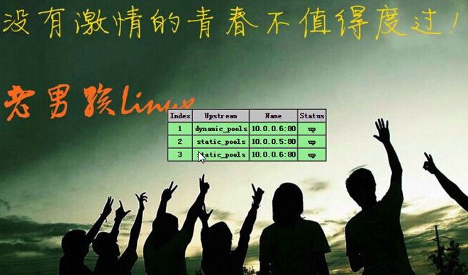

前言
本题来自老男孩老师的博客，自己完成解答
涉及到的题基本上都是在企业实战能遇到的，如果可以自行找出答案，薪资可以翻倍的，哈哈，偏题了呀，下面进入正题……
企业实战题1
监控MySQL主从同步是否异常，如果异常，则发送短信或者邮件给管理员。提示：如果没主从同步环境,可以用下面文本放到文件里读取来模拟：
阶段1：开发一个守护进程脚本每30秒实现检测一次。
阶段2：如果同步出现如下错误号（1158,1159,1008,1007,1062），则跳过错误。
阶段3：请使用数组技术实现上述脚本（获取主从判断及错误号部分）
[root@oldboy~]# mysql -uroot -p'oldboy' -S /data/3307/mysql.sock -e "show slavestatus\G;"
*************************** 1. row ***************************
Slave_IO_State:Waiting for master to send event
Master_Host:10.0.0.179 #当前的mysql master服务器主机
Master_User: rep
Master_Port: 3306
Connect_Retry: 60
Master_Log_File:mysql-bin.000013
Read_Master_Log_Pos: 502547
Relay_Log_File:relay-bin.000013
Relay_Log_Pos:251
Relay_Master_Log_File:mysql-bin.000013
Slave_IO_Running:Yes
Slave_SQL_Running: Yes
Replicate_Do_DB:
Replicate_Ignore_DB: mysql
Replicate_Do_Table:
Replicate_Ignore_Table:
Replicate_Wild_Do_Table:
Replicate_Wild_Ignore_Table:
Last_Errno: 0
Last_Error:
Skip_Counter: 0
Exec_Master_Log_Pos: 502547
Relay_Log_Space:502986
Until_Condition:None
Until_Log_File:
Until_Log_Pos: 0
Master_SSL_Allowed: No
Master_SSL_CA_File:
Master_SSL_CA_Path:
Master_SSL_Cert:
Master_SSL_Cipher:
Master_SSL_Key:
Seconds_Behind_Master: 0 #和主库比同步延迟的秒数，这个参数很重要
Master_SSL_Verify_Server_Cert: No
Last_IO_Errno: 0
Last_IO_Error:
Last_SQL_Errno: 0
Last_SQL_Error:
解答链接：http://www.cnblogs.com/oliver-blogs/p/7715648.html
企业实战题2
使用for循环在/oldboy目录下通过随机小写10个字母加固定字符串oldboy批量创建10个html文件，名称例如为：
[root@oldboy oldboy]# sh /server/scripts/oldboy.sh
[root@oldboy oldboy]# ls
coaolvajcq_oldboy.html qnvuxvicni_oldboy.html vioesjmcbu_oldboy.html
gmkhrancxh_oldboy.html tmdjormaxr_oldboy.html wzewnojiwe_oldboy.html
jdxexendbe_oldboy.html ugaywanjlm_oldboy.html xzzruhdzda_oldboy.html
qcawgsrtkp_oldboy.html vfrphtqjpc_oldboy.html
解答链接：http://www.cnblogs.com/oliver-blogs/p/7715691.html
企业实战题3
请用至少两种方法实现！
将以上文件名中的oldboy全部改成oldgirl(用for循环实现),并且html改成大写。
解答链接：http://www.cnblogs.com/oliver-blogs/p/7715719.html
企业实战题4
批量创建10个系统帐号oldboy01-oldboy10并设置密码（密码为随机8位字符串）。
解答链接：http://www.cnblogs.com/oliver-blogs/p/7715759.html
企业实战题5
写一个脚本，实现判断10.0.0.0/24网络里，当前在线用户的IP有哪些（方法有很多）
解答链接：http://www.cnblogs.com/oliver-blogs/p/7715865.html
企业实战题6
请用至少两种方法实现！
写一个脚本解决DOS攻击生产案例
提示：根据web日志或者或者网络连接数，监控当某个IP并发连接数或者短时内PV达到100，即调用防火墙命令封掉对应的IP，监控频率每隔3分钟。防火墙命令为：iptables -I INPUT -s 10.0.1.10 -j DROP。
解答链接：http://www.cnblogs.com/oliver-blogs/p/7716383.html
企业实战题7
开发mysql多实例启动脚本：
已知mysql多实例启动命令为：mysqld_safe–defaults-file=/data/3306/my.cnf &
停止命令为：mysqladmin -u root -poldboy123 -S /data/3306/mysql.sockshutdown
请完成mysql多实例启动启动脚本的编写
要求：用函数，case语句、if语句等实现。
解答链接：http://www.cnblogs.com/oliver-blogs/p/7722589.html
企业实战题8
如何实现对MySQL数据库进行分库备份，请用脚本实现
解答链接：http://www.cnblogs.com/oliver-blogs/p/7723324.html
企业实战题9
如何实现对MySQL数据库进行分库加分表备份，请用脚本实现
解答链接：http://www.cnblogs.com/oliver-blogs/p/7723362.html
企业实战题10
请用至少两种方法实现！
bash for循环打印下面这句话中字母数不大于6的单词(昆仑万维面试题)。
I am oldboy teacher welcome to oldboy training class.
解答链接：http://www.cnblogs.com/oliver-blogs/p/7723392.html
企业实战题11
开发shell脚本分别实现以脚本传参以及read读入的方式比较2个整数大小。以屏幕输出的方式提醒用户比较结果。注意：一共是开发2个脚本。当用脚本传参以及read读入的方式需要对变量是否为数字、并且传参个数做判断。
解答链接：http://www.cnblogs.com/oliver-blogs/p/7723559.html
企业实战题12
打印选择菜单，一键安装Web服务：
[root@oldboyscripts]# sh menu.sh
1.[install lamp]
2.[install lnmp]
3.[exit]
pls input the num you want:
要求：
1、当用户输入1时，输出“startinstalling lamp.”然后执行/server/scripts/lamp.sh，脚本内容输出”lampis installed”后退出脚本；
2、当用户输入2时，输出“startinstalling lnmp.”然后执行/server/scripts/lnmp.sh输出”lnmpis installed”后退出脚本;
3、当输入3时，退出当前菜单及脚本；
4、当输入任何其它字符，给出提示“Input error”后退出脚本。
5、要对执行的脚本进行相关条件判断，例如：脚本是否存在，是否可执行等。
解答链接：http://www.cnblogs.com/oliver-blogs/p/7723828.html
企业实战题13
1、监控web服务是否正常，不低于3种监控策略。
2、监控db服务是否正常，不低于3种监控策略。
要求间隔1分钟，持续监控。
解答链接：http://www.cnblogs.com/oliver-blogs/p/7723849.html
企业实战题14
监控memcache服务是否正常，模拟用户（web客户端）检测。
使用nc命令加上set/get来模拟检测，以及监控响应时间及命中率。
企业实战题15
面试及实战考试题：监控web站点目录（/var/html/www）下所有文件是否被恶意篡改（文件内容被改了），如果有就打印改动的文件名（发邮件），定时任务每3分钟执行一次(10分钟时间完成)。
企业实战题16
企业案例:写网络服务独立进程模式下rsync的系统启动脚本
例如：/etc/init.d/rsyncd{start|stop|restart} 。
要求：
1.要使用系统函数库技巧。
2.要用函数，不能一坨SHI的方式。
3.可被chkconfig管理。
企业实战题17
老男孩教育天津项目学生实践抓阄题目：
好消息，老男孩培训学生外出企业项目实践机会（第6次）来了（本月中旬），但是，名额有限，队员限3人（班长带队）。
因此需要挑选学生，因此需要一个抓阄的程序：
要求：
1、执行脚本后，想去的同学输入英文名字全拼，产生随机数01-99之间的数字，数字越大就去参加项目实践，前面已经抓到的数字，下次不能在出现相同数字。
2、第一个输入名字后，屏幕输出信息，并将名字和数字记录到文件里，程序不能退出继续等待别的学生输入。
企业实战题18
老男孩linux实践题：
已知下面的字符串是通过RANDOM随机数变量md5sum|cut-c 1-8截取后的结果，请破解这些字符串对应的md5sum前的RANDOM对应数字？
21029299
00205d1c
a3da1677
1f6d12dd
890684b
企业实战题19
批量检查多个网站地址是否正常
要求：shell数组方法实现，检测策略尽量模拟用户访问思路
企业实战题20
(中企动力)：：用shell处理以下内容
1、按单词出现频率降序排序！
2、按字母出现频率降序排序！
the squid project provides a number of resources toassist users design,implement and support squid installations. Please browsethe documentation and support sections for more infomation
企业实战题21
输出正方形、等腰三角形、直角梯形，见如下内容
http://oldboy.blog.51cto.com/2561410/1718607
企业实战题22
开发通过web界面展示监控Nginx代理节点状态，效果图如下。

lvs+keepalived集群部分Shell企业案例：
企业实战题23
【LVS主节点】手工开发ipvsadm管理lvs的脚本ip_vs
实现：/etc/init.d/lvs {start|stop|restart}
企业实战题24
【LVS主节点】模拟keepalived健康检查功能管理LVS节点，
当节点挂掉（检测2次，间隔2秒）从服务器池中剔除，好了（检测2次，间隔2秒）加进来
提示：利用ipvsadm命令实现添加和减少LVS节点。
企业实战题25
LVS客户端节点】开发LVS客户端设置VIP以及抑制ARP的管理脚本
实现：/etc/init.d/lvsclient {start|stop|restart}
企业实战题26
【LVS备节点】模拟keepalved vrrp功能，监听主节点，如果主节点不可访问则备节点启动并配置LVS实现接管主节点的资源提供服务（提醒：注意ARP缓存）
企业实战题27
请用shell或Python编写一个正方形(oldboy_square.sh)，接收用户输入的数字。
例如：
[root@oldboy ~]# sh oldboy_square1.sh
Please Enter a number:5
++++++++++
++++++++++
++++++++++
++++++++++
++++++++++
[root@oldboy ~]# sh oldboy_square2.sh
Please Enter a number:9
■■■■■■■■■
■■■■■■■■■
■■■■■■■■■
■■■■■■■■■
■■■■■■■■■
■■■■■■■■■
■■■■■■■■■
■■■■■■■■■
■■■■■■■■■
企业实战题28
请用shell或Python编写一个等腰三角形(oldboy2_triangle.sh)，接收用户输入的数字。
例如：
[root@oldboy ~]# sh oldboy2_triangle.sh
Please Enter a number:5
*
***
*****
*******
*********
[root@oldboy ~]# sh oldboy2_triangle.sh
Please Enter a number:8
*
***
*****
*******
*********
***********
*************
***************
企业实战题29
请用shell或Python编写一个画直角梯形程序(oldboy4.sh)，接收用户输入的参数n，m
例如：
[root@oldboy ~]# sh oldboy4.sh 4 6
****
*****
******
27,28,29三道题参考http://oldboy.blog.51cto.com/2561410/1718607
企业实战题30
写一套简单的企业代码上线发布系统案例，利用SVN对代码及配置文件进行管理，在办公室服务器上从svn取出指定版本的代码和配置，发布到IDC机房分发机服务器上，在分发服务器或者负载均衡器上或者应用服务器本地实现代码平滑发布、上线、回滚脚本（具体设计请参考课堂讲解的企业代码发布方案）。
企业实战题31
请设计一套Git+Saltstack实现代码的线上发布及管理方案。